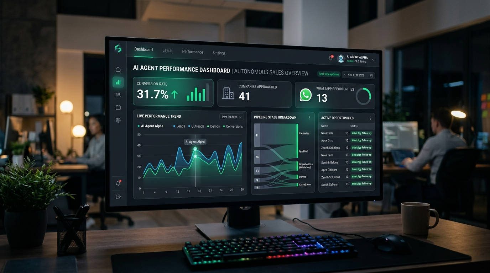
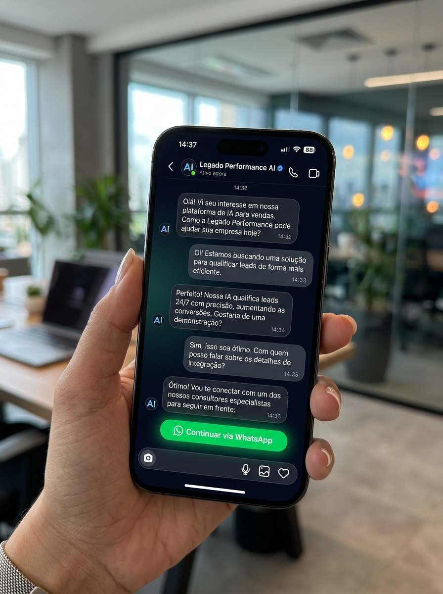

Filtrei a engenharia real daquele funil do vídeo para a Legado Performance rodar em 7 dias. Sem risco para a conta oficial, qualificando reuniões para o seu SDR e pronta para vendermos como Máquina de Orçamentos para os seus clientes.
A métrica central é real: 13 oportunidades quentes no WhatsApp a partir de 41 empresas no primeiro dia (31,7% de avanço). A diferença é como executar isso sem queimar a sua empresa.
Disparar mensagens não solicitadas para perfis desconhecidos gera bloqueio permanente no Instagram em menos de 7 dias.
Robôs sem inteligência de vendas apenas irritam o cliente. A IA precisa conduzir o diálogo e filtrar quem tem orçamento real.
A IA atua como uma consultora da Legado: pergunta nicho, faturamento e verba para tráfego antes de transferir.
O lead pronto cai no WhatsApp do seu SDR já com o resumo da conversa para agendar a reunião de fechamento.

Minha recomendação técnica para o cenário da Legado Performance:
Usamos o core business da Legado (tráfego pago) para atrair leads para o Direct. A IA qualifica em segundos e entrega o contato no WhatsApp do SDR.
Robôs raspando seguidores e disparando mensagens não solicitadas para empresas aleatórias.
A mesma tecnologia resolve a sua operação interna e gera um novo produto para venda:
Abastecer o seu SDR com reuniões qualificadas todos os dias para fechar contratos de assessoria comercial.
Vender essa mesma solução para os clientes da sua assessoria como um produto de alto valor.
Diálogo natural, rápido e focado em triagem de oportunidades para o SDR:

O lead entra pelo anúncio ou mensagem no Direct. Em 5 segundos a IA responde de forma natural, sem parecer robô engessado.
A IA conduz a conversa descobrindo se a empresa já anuncia, qual o segmento e qual o objetivo principal.
Confirmado o perfil ideal, o sistema notifica o seu SDR no WhatsApp com o dossiê pronto para agendar a reunião.
Plano direto dia a dia para estarmos operando na próxima semana:
Definição das perguntas de triagem (nicho, verba mínima de anúncio e regras de descarte).
Estruturação dos prompts com tom consultivo, regras anti-alucinação e tratamento de objeções.
Conexão da conta da Legado Performance através da API oficial da Meta.
Configuração do webhook para entrega imediata dos leads qualificados para a equipe.
Testes de estresse com 50 conversas simuladas para calibragem das respostas.
Abertura para tráfego real com acompanhamento do SDR em tempo real.
Máquina comercial rodando 24 horas por dia e playbook pronto para venda a clientes.
Ajuste o volume diário de conversas no Direct e veja a projeção real de conversão etapa por etapa:
70% concluem a triagem inicial da IA no Direct. Desses, 35% atendem aos critérios de verba/nicho e disparam o webhook para o WhatsApp do SDR. O SDR converte 25% dos contatos em reuniões de fechamento.
Custos de tecnologia pagos diretamente às ferramentas, sem margem ou taxas ocultas:
| Plataforma | Função | Custo Mensal Estimado |
|---|---|---|
| OpenAI (GPT-4o-mini) | Processamento das respostas e triagem | 40 a 100 reais por mês |
| ManyChat (API Oficial Meta) | Canal oficial no Instagram sem risco de bloqueio | Cerca de 85 reais por mês |
| WhatsApp Gateway | Notificações instantâneas do SDR | Zero a 80 reais por mês |
| Total Estimado de Ferramentas | Menos de 250 reais por mês | |
A estrutura técnica está desenhada. Com o seu alinhamento nos critérios de qualificação, iniciamos o sprint hoje mesmo.
Implementar uma operação autônoma de qualificação comercial para a Legado Performance no Instagram Direct e WhatsApp, além de gerar o playbook para replicação como Máquina de Orçamentos para clientes da assessoria.
O fluxo conecta anúncios do Meta Ads diretamente ao Instagram Direct utilizando a API oficial da Meta via ManyChat. O modelo GPT-4o-mini da OpenAI realiza o atendimento e a qualificação de critérios pré-definidos (nicho, faturamento, verba para anúncios). Leads aprovados disparam automaticamente um webhook que entrega o dossiê no WhatsApp do SDR.
Adoção estrita de rotas oficiais da Meta, eliminando qualquer risco de banimento ou bloqueio de perfil da Legado Performance.
Execução em 7 dias úteis, divididos entre definição de ICP, engenharia de prompt, integrações de webhook, baterias de teste com clientes simulados e início da operação assistida.